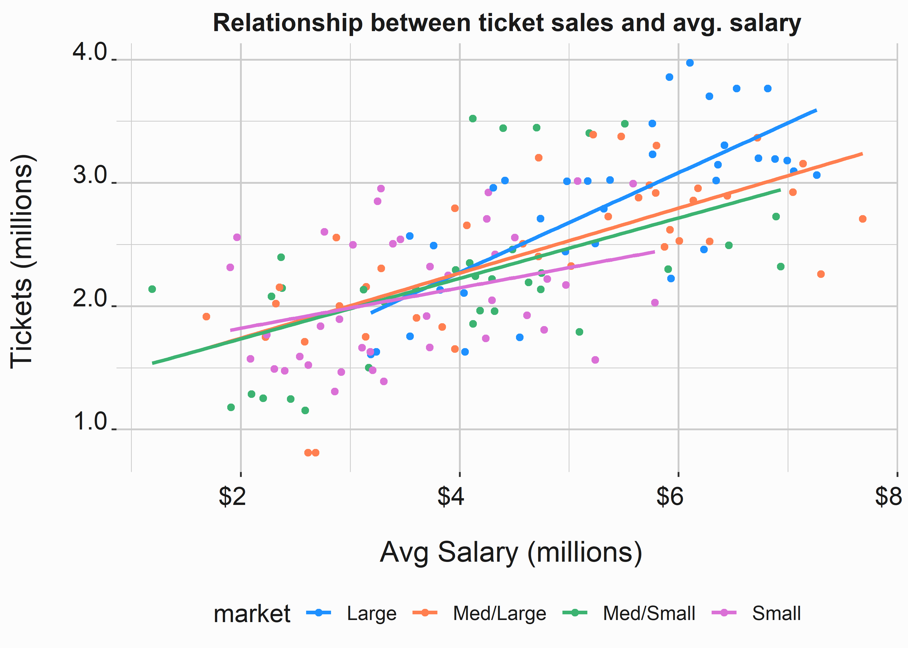
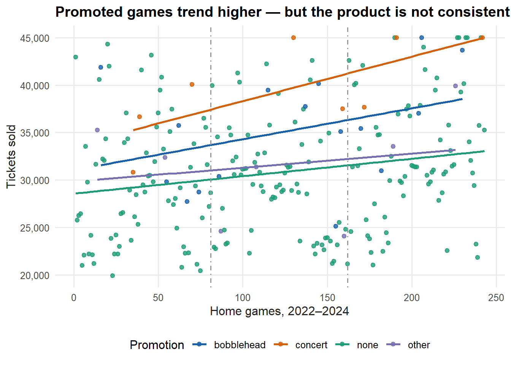
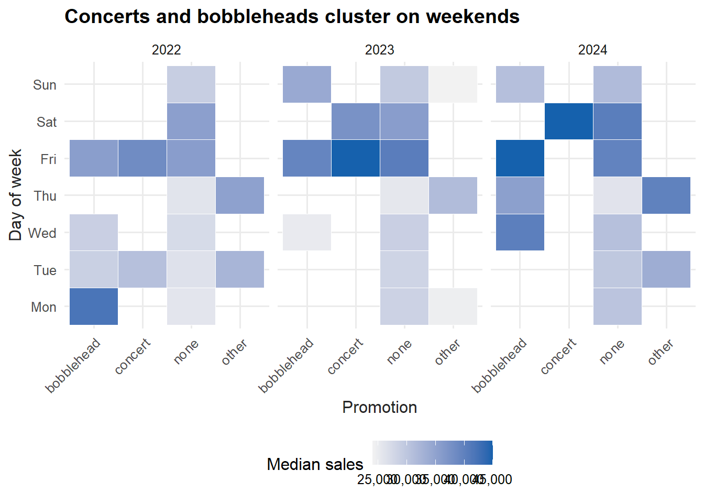
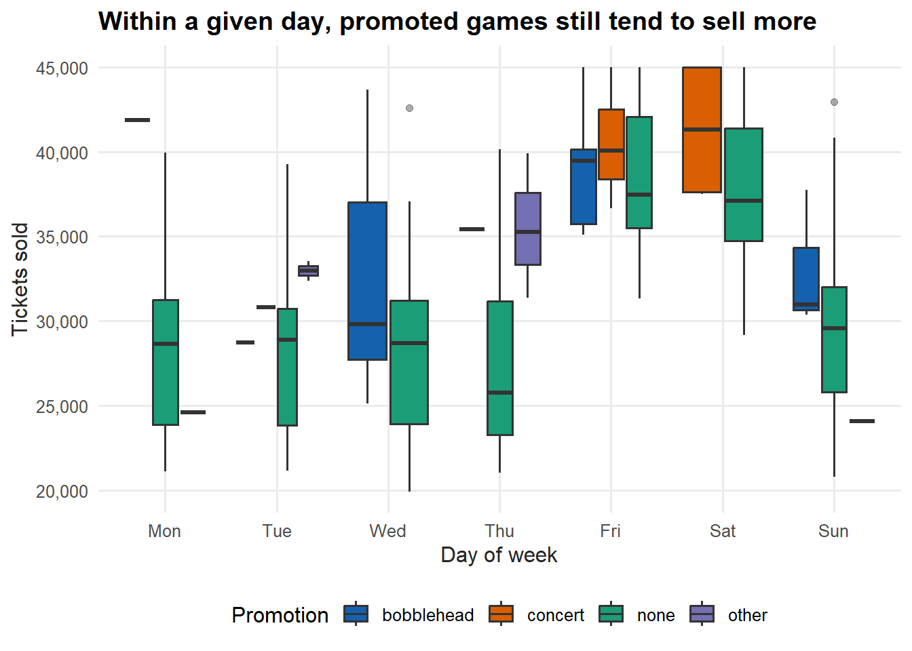
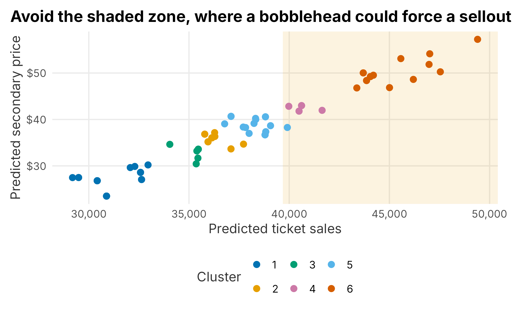

8 Marketing promotions
Measuring whether a promotion worked is genuinely hard, and it gets harder if you treat all advertising as a kind of promotion. Some clubs have started cutting any promotion they cannot measure. That is reasonable up to a point, but I would not go that far. Major sports are unusual: when the team is winning, the brand carries itself — and no team wins forever. This chapter works through a concrete example of measuring a promotion’s impact, then discusses the messier problem of valuing media and marketing assets.
Why run promotions at all? Like any marketing lever, to increase sales. In sports they are usually a response to less anticipated demand than capacity — which creates a paradox: promotions tend to perform best exactly when the team is already drawing well. Take a multi-year view and you will make different choices than a single fiscal year would suggest, and there are brand considerations on top of that. Constantly reaching for price promotions can erode brand equity (Keller 2003).
Common sports promotions include:
- Giveaways such as bobbleheads
- Post-game concerts
- Buy-one-get-one tickets
- Loyalty programs for season-ticket holders
- Flash sales and other dynamic-pricing offers
Promotions also cost money — often tied to a sponsorship — so unless the only goal is raw revenue, you usually want to justify the return. And many advertising channels are notoriously hard to evaluate: out-of-home (billboards), radio, television, search, social, earned media, podcasts, and charitable activity. Social platforms are walled gardens that report their own return on ad spend, and they have little incentive to tell you something is not working. Search-engine marketing is worse in sports, because it mostly functions as a beachhead for secondary-market sellers you cannot outspend.
There is a deeper problem. Much of a club’s outcome is outside marketing’s control. The relationship below — built from public MLB data on ticket sales and average payroll, with points colored by market size — makes the point.

Figure 8.1: Ticket sales versus team payroll
Payroll and tickets sold are clearly related, and small markets cluster low while large markets cluster high. That raises an uncomfortable question:
If you can predict ticket sales reasonably well from macro factors like payroll and wins, how much do your marketing efforts actually move?
It is a fair challenge. For many clubs the biggest lever is investment in the team itself — especially in baseball, where 81 home games expose you to every swing in performance. With that backdrop, several questions are worth asking about promotions specifically:
- Are average ticket sales higher during a major promotion, once you account for when it runs?
- Is turnstile (actual attendance) higher? What happens to food and beverage?
- Can we identify a causal link, or only a correlation?
- Do promotions pull demand toward cheaper seats and lower the yield?
We will work through evaluating major promotions and then turn to media valuation. The analysis revisits the season data from a new angle. Promotions produce small samples, which pushes us toward a non-parametric world where the usual tools strain — so read the results with care.
8.1 Measuring the impact of promotions
We start with the familiar season_data.
season <- FOSBAAS::season_data| variable | class | first_values |
|---|---|---|
| gameNumber | numeric | 1, 2 |
| team | character | SF, SF |
| date | Date | 2022-03-27, 2022-03-28 |
| dayOfWeek | character | Sun, Mon |
| month | character | Mar, Mar |
| weekEnd | logical | FALSE, FALSE |
| schoolInOut | logical | FALSE, FALSE |
| daysSinceLastGame | numeric | 50, 1 |
| openingDay | logical | TRUE, FALSE |
| promotion | character | none, none |
| ticketSales | numeric | 42928, 25759 |
| season | numeric | 2022, 2022 |
Bobbleheads and concerts are everywhere in sports, which might lead you to assume they are obvious ticket drivers. The truth is more complicated. Plotting every home game across three seasons, colored by promotion, is a good first look.
season <- season |> mutate(game = row_number())
ggplot(season, aes(x = game, y = ticketSales, color = promotion)) +
geom_point(size = 1.8, alpha = 0.8) +
geom_smooth(method = "lm", formula = y ~ x, se = FALSE, linewidth = 1) +
geom_vline(xintercept = c(81, 162), linetype = 4, color = "grey60") +
scale_color_manual("Promotion", values = plot_palette) +
scale_y_continuous(labels = scales::comma) +
labs(x = "Home games, 2022–2024", y = "Tickets sold",
title = "Promoted games trend higher — but the product is not consistent") +
book_theme
Figure 8.2: Ticket sales across the schedule by promotion
If you simply averaged sales by promotion, it would look like promotions clearly lift attendance. But the product is not consistent: that wide vertical scatter contains seasonality, opponent quality, day of week, and trend — all confounded with when promotions are scheduled. We have to control for those before believing the lift.
A tile plot of median sales by promotion and day of week, split by season, shows the confound directly.
promo_tiles <- season |>
group_by(season, dayOfWeek, promotion) |>
summarise(median_sales = median(ticketSales), .groups = "drop")
ggplot(promo_tiles, aes(x = promotion, y = dayOfWeek, fill = median_sales)) +
geom_tile(color = "white") +
facet_grid(. ~ season) +
scale_fill_gradient("Median sales", low = "#f2f2f2", high = plot_palette[1],
labels = scales::comma) +
scale_y_discrete(limits = c("Mon","Tue","Wed","Thu","Fri","Sat","Sun")) +
labs(x = "Promotion", y = "Day of week",
title = "Concerts and bobbleheads cluster on weekends") +
book_theme +
theme(axis.text.x = element_text(angle = 45, hjust = 1))
Figure 8.3: Median ticket sales by promotion and day of week
Concerts and bobbleheads almost always land on weekends, which already sell well. So a naive promotion-versus-none comparison is partly a weekend-versus-weekday comparison. A box plot that holds day of week on the axis separates the two effects more honestly.
ggplot(season, aes(x = dayOfWeek, y = ticketSales, fill = promotion)) +
geom_boxplot(outlier.alpha = 0.4) +
scale_fill_manual("Promotion", values = plot_palette) +
scale_x_discrete(limits = c("Mon","Tue","Wed","Thu","Fri","Sat","Sun")) +
scale_y_continuous(labels = scales::comma) +
labs(x = "Day of week", y = "Tickets sold",
title = "Within a given day, promoted games still tend to sell more") +
book_theme
Figure 8.4: Ticket sales by day of week and promotion
This is more convincing. Within a given day of week, promoted games still tend to sell more, which suggests a real effect rather than pure scheduling. But the eye can deceive, and opponent quality is still lurking. To put a number on the lift while controlling for the obvious confounders, we need a model.
8.1.1 Estimating the lift with a model
Regression takes rigor, and it works best with lots of data — a luxury we do not have here. We will use a different framework this time, tidymodels (Kuhn and Wickham 2021), partly to show another good option. Like mlr3, it makes preprocessing and evaluation systematic; its pipe-based recipes are easy to read.
library(tidymodels)
promo_data <- FOSBAAS::season_data |>
dplyr::select(gameNumber, team, month, weekEnd, daysSinceLastGame,
promotion, ticketSales)We want the coefficients to read as “lift versus an ordinary game,” so we relabel none to anone. Because step_dummy drops the first level alphabetically, this makes “no promotion” the reference category that the others are compared against.
promo_data <- promo_data |>
mutate(promotion = ifelse(promotion == "none", "anone", promotion))We split the data, holding out 25% with the rsample package (Silge et al. 2021).
set.seed(755)
promo_split <- initial_split(promo_data, prop = 0.75)
train_data <- training(promo_split)
test_data <- testing(promo_split)A tidymodels recipe describes the preprocessing in layers. We mark gameNumber as an ID (not a predictor), protect against opponents that appear only in the test set with step_novel, dummy-code the categoricals, and drop any zero-variance columns.
sales_rec <- recipe(ticketSales ~ ., data = train_data) |>
update_role(gameNumber, new_role = "ID") |>
step_novel(all_nominal_predictors()) |>
step_dummy(all_nominal_predictors()) |>
step_zv(all_predictors())We pair the recipe with a linear model in a workflow.
lm_model <- linear_reg() |>
set_engine("lm") |>
set_mode("regression")
sales_wflow <- workflow() |>
add_model(lm_model) |>
add_recipe(sales_rec)Before trusting a single fit, cross-validate to see how stable the error is.
set.seed(755)
folds <- vfold_cv(train_data, v = 10)
cv_metrics <- collect_metrics(fit_resamples(sales_wflow, folds))| .metric | mean | n | std_err |
|---|---|---|---|
| rmse | 2344.392 | 10 | 169.144 |
| rsq | 0.877 | 10 | 0.023 |
The R-squared looks high, but remember the sample is small and the model has many categorical levels, so it can fit the history too closely. With that caveat, fit the model and pull out the coefficients.
sales_fit <- sales_wflow |> fit(data = train_data)
coefficients <- sales_fit |>
extract_fit_parsnip() |>
tidy()| term | estimate | std.error | statistic | p.value |
|---|---|---|---|---|
| promotion_bobblehead | 4062.0 | 638.5 | 6.4 | 0.0 |
| promotion_concert | 3653.0 | 945.3 | 3.9 | 0.0 |
| promotion_other | 1406.9 | 996.0 | 1.4 | 0.2 |
We extract the bobblehead effect by name rather than by position, so the code does not break if the column order changes.
bobblehead_lift <- coefficients |>
dplyr::filter(term == "promotion_bobblehead") |>
dplyr::pull(estimate)
round(bobblehead_lift)## [1] 4062Holding day of week, month, opponent, and rest constant, a bobblehead is worth roughly 4,062 additional tickets, and a concert a similar amount, while the catch-all “other” category is not statistically distinguishable from no promotion. That is a real, sizable lift — but it is not the whole story.
Promotions cost money, and the costs differ wildly. A bobblehead has a clean per-unit cost plus storage and handling. A concert can carry talent fees, production, lighting, and even turf replacement — the stadium electric bill alone can surprise you. A concert may also drive ancillary food, beverage, and merchandise that a bobblehead does not, while the extra tickets a bobblehead sells may be the cheapest seats in the building. Which one nets the most revenue depends on all of that, not on ticket lift alone.
8.2 Placing a promotion on the schedule
Suppose we are convinced bobbleheads and concerts lift sales and we want to add one more bobblehead to next season. Where should it go? The decision usually trades off two goals: maximizing ticket impact and maximizing revenue. We can lean on the event-score model from Chapter 6.
We rebuild that model here: a ticket-sales model and a secondary-price model fit on three simulated past seasons, then applied to a fresh 2025 schedule.
build_season <- FOSBAAS::f_build_season
past_season <- rbind(
build_season(seed1 = 3000, season_year = 2022, seed2 = 714, num_games = 81,
seed3 = 366, num_bbh = 5, num_con = 3, num_oth = 5,
seed4 = 309, seed5 = 25, mean_sales = 29000, sd_sales = 3500),
build_season(seed1 = 2892, season_year = 2024, seed2 = 714, num_games = 81,
seed3 = 366, num_bbh = 9, num_con = 2, num_oth = 6,
seed4 = 6856, seed5 = 2892, mean_sales = 32300, sd_sales = 2900)
)
ticket_model <- lm(
ticketSales ~ promotion + daysSinceLastGame + schoolInOut + weekEnd + team,
data = past_season
)
# secondary-market price by game, lightly tied to demand (as in Chapter 6)
sea <- FOSBAAS::season_data
sea$gameID <- seq_len(nrow(sea))
secondary_by_game <- FOSBAAS::secondary_data |>
dplyr::left_join(FOSBAAS::manifest_data, by = "seatID") |>
dplyr::group_by(gameID) |>
dplyr::summarise(mean_secondary = mean(price, na.rm = TRUE), .groups = "drop")
sea <- sea |> dplyr::left_join(secondary_by_game, by = "gameID")
sea$mean_secondary_adj <- sea$mean_secondary + as.vector(scale(sea$ticketSales)) * 10
price_model <- lm(
mean_secondary_adj ~ promotion + daysSinceLastGame + schoolInOut + weekEnd + team,
data = sea
)Now build the 2025 schedule, predict tickets and price, and combine them into an event score (standardizing each so they share a scale).
season_2025 <- build_season(
seed1 = 755, season_year = 2025, seed2 = 714, num_games = 81,
seed3 = 366, num_bbh = 5, num_con = 3, num_oth = 7,
seed4 = 366, seed5 = 1, mean_sales = 0, sd_sales = 0)
season_2025 <- season_2025 |>
mutate(
pred_tickets = predict(ticket_model, newdata = season_2025),
pred_price = predict(price_model, newdata = season_2025),
event_score = as.vector(scale(pred_tickets)) * 100 +
as.vector(scale(pred_price)) * 100
)
set.seed(715)
season_2025$cluster <- factor(kmeans(season_2025$event_score, centers = 6)$cluster)A scatter of predicted price against predicted sales, colored by cluster, shows the trade-off. The shaded band marks the sellout-risk zone: games whose predicted sales are already within a bobblehead’s lift of the roughly 45,000-seat capacity. We size that band with the upper bound of the bobblehead coefficient’s confidence interval, so we are being conservative.
capacity <- 45000
bobblehead_ci_upper <- confint(
extract_fit_engine(sales_fit)
)["promotion_bobblehead", 2]
ggplot(season_2025, aes(x = pred_tickets, y = pred_price, color = cluster)) +
annotate("rect", xmin = capacity - bobblehead_ci_upper, xmax = Inf,
ymin = -Inf, ymax = Inf, alpha = 0.12, fill = plot_palette[2]) +
geom_point(size = 2.5) +
scale_color_manual("Cluster", values = plot_palette) +
scale_x_continuous(labels = scales::comma) +
scale_y_continuous(labels = scales::dollar) +
labs(x = "Predicted ticket sales", y = "Predicted secondary price",
title = "Avoid the shaded zone, where a bobblehead could force a sellout") +
book_theme
Figure 8.5: Predicted sales and price by event cluster
Now pick a candidate with explicit logic rather than by eye. We want a game with enough headroom that even the high end of the bobblehead lift will not push it past capacity, and among those we prefer the highest predicted price, on the theory that the ancillary and premium revenue justifies the giveaway.
candidate <- season_2025 |>
dplyr::filter(pred_tickets + bobblehead_ci_upper < capacity) |>
dplyr::arrange(desc(pred_price)) |>
dplyr::slice(1)| team | date | dayOfWeek | month | pred_tickets | pred_price |
|---|---|---|---|---|---|
| ATL | 2025-05-30 | Fri | May | 37098 | 41 |
This game has room to grow, no competing promotion, and a high predicted price — a strong candidate. But the model is only the start. Sponsors often have preferences about timing. A bobblehead may need six months of lead time, so the analysis has to happen early. The item’s theme has to fit the night, and you have to weigh competing events elsewhere in the market. Use the model to narrow the field; use judgment to make the call.
8.3 Evaluating marketing assets
This is not a marketing textbook, but a full picture of sports analytics has to touch how marketing assets are valued. Be warned: when you reach the bottom of these valuations, some arbitrary figure is usually holding everything up. A marketing asset is worth what someone will pay for it, and worth is generally judged two ways — how many people are exposed, and how good that exposure is. Most asset valuations reduce to an impressions-style formula:
\[\begin{equation} \text{Value} = \text{Exposure} \times \text{Quality} \times \text{Cost per exposure} \end{equation}\]
That cost-per-exposure term is the arbitrary one, and it is genuinely hard to estimate. I find this corner of analytics a little unsatisfying — proving what advertising is worth to a club is closer to astrology than accounting, and the digital giants who sell you the advertising are also the ones grading its effectiveness.
8.3.1 External assets
External marketing assets are enormously varied, and the message shifts through the year — brand messaging in the off-season, ticket-sales messaging in season. I group digital marketing into two buckets:
- Platform digital — the tech giants (Google Display, Facebook, Instagram, YouTube, TikTok, Spotify, Amazon). They offer sophisticated targeting and make it relatively easy to attribute sales, though that is getting harder. Attribution generally uses one of three approaches: first-touch/last-touch (credit the whole sale to the first or last platform a buyer visited), weighted models (split credit across touchpoints, often decaying over time), or algorithmic models (custom-built, using regression or similar). In sports we mostly deal in many small, predictably timed transactions, which is not the ideal setting for elaborate algorithmic attribution. Good is the enemy of great here — do not overthink it.
- Local digital — display through regional outlets such as a city newspaper’s website, which tends to over-index on your home market.
Other channels round it out: search-engine marketing (a weak strategy in sports, since you cannot outspend the secondary-market makers); television (declining for years as habits change); radio (measured by panels and also shrinking against streaming); out-of-home (cheap, widely available, sold in precise increments); and print (largely faded). Many of these defy clean measurement. Rather than building formal experiments around print ads, start with what you do know — your sales cadence and the customer journey — and cut spending in channels you cannot measure.
There is a recurring paradox: when the team is good, marketing looks effective, especially when price is the lever. Whether the same spend works when the team is bad is much harder to validate. The strategic response is to stay skeptical and to test relentlessly.
8.3.2 Internal assets
Internal assets — in-venue signage, broadcasts, category rights, social posts, community work, uniform patches, naming rights — behave like external ones with an extra wrinkle: association with the team confers brand equity that a Facebook ad does not, and some of it rubs off from the other brands in the building. That makes a single sign or post harder to value. The usual process:
- Estimate exposure: how many people see the asset, through each channel?
- Assess quality: how often and how prominently is it visible?
- Assign a unit value to the audience in each channel.
- Add a coefficient for the brand association the team confers.
The practical starting point is the rate card: how much inventory is sold versus idle, where the imbalances are, and whether there is room to create new inventory (a foul-pole sign, say). Many sponsorships run on staggered multi-year terms with category exclusivities, which constrains what you can sell. Justifying a sponsorship objectively is difficult; a decision matrix handles the measurable factors, but brand considerations resist it.
8.4 Key concepts and chapter summary
Promotions respond to having less demand than capacity, and they are hard to evaluate honestly. We covered:
- Evaluating promotion efficacy while controlling for confounders
- Estimating lift with a
tidymodelsregression - Placing a promotion on the schedule using event scores
- Valuing internal and external marketing assets
A few lessons stand out:
- Raw averages lie. Promotions cluster on weekends and good matchups, so you must control for day of week, opponent, and season before claiming a lift. Once we did, a bobblehead was worth roughly four thousand tickets — a real effect, but only visible after the confounders were removed.
- Lift is not profit. Always weigh the marginal cost of the promotion and the mix of seats and ancillary spend it drives.
- Scheduling is a pricing problem. Place promotions where there is headroom below capacity and upside in price, then layer in sponsor, lead-time, and competitive considerations.
- Most media valuation rests on an arbitrary number. Be honest about that, value assets on exposure, quality, and brand association, and test relentlessly rather than trusting a platform’s self-graded report.
Chapter 9 turns to marketing mix modeling — a top-down way to measure what all of that marketing spend actually returns, and where the next dollar should go, when following individual customers is impossible.